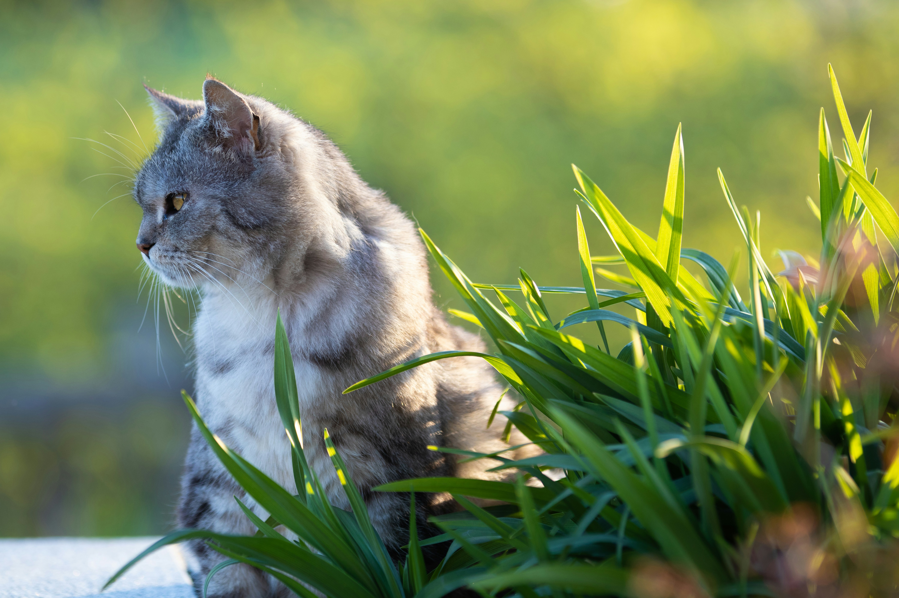
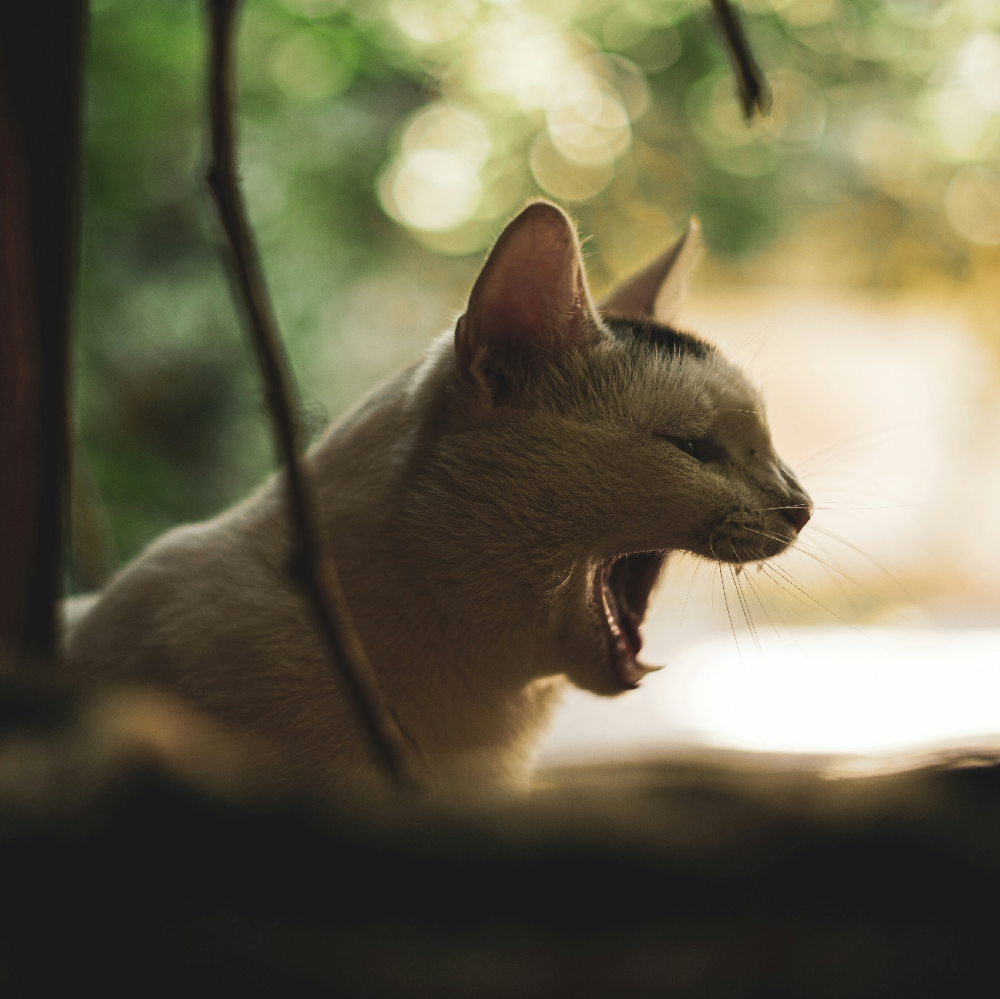
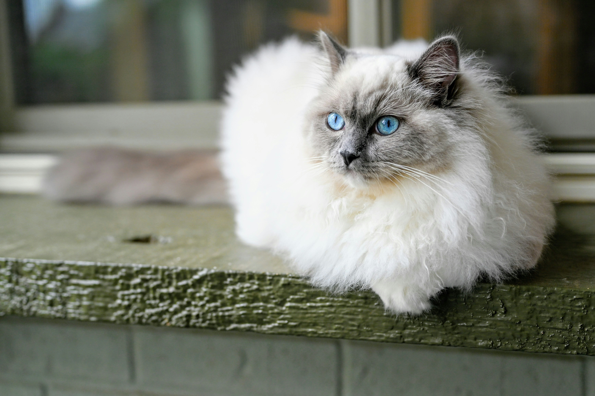
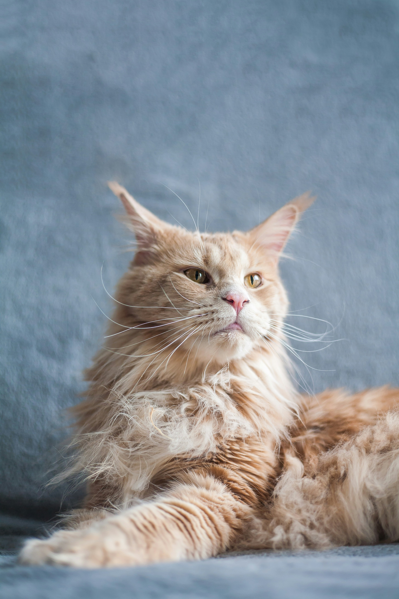
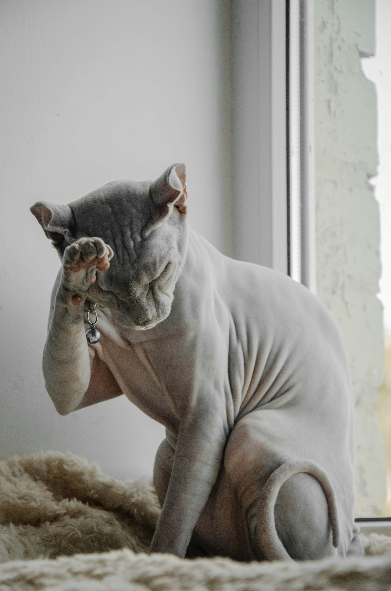
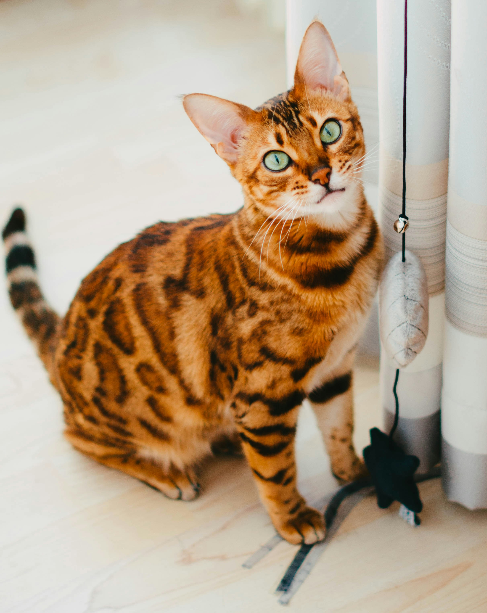
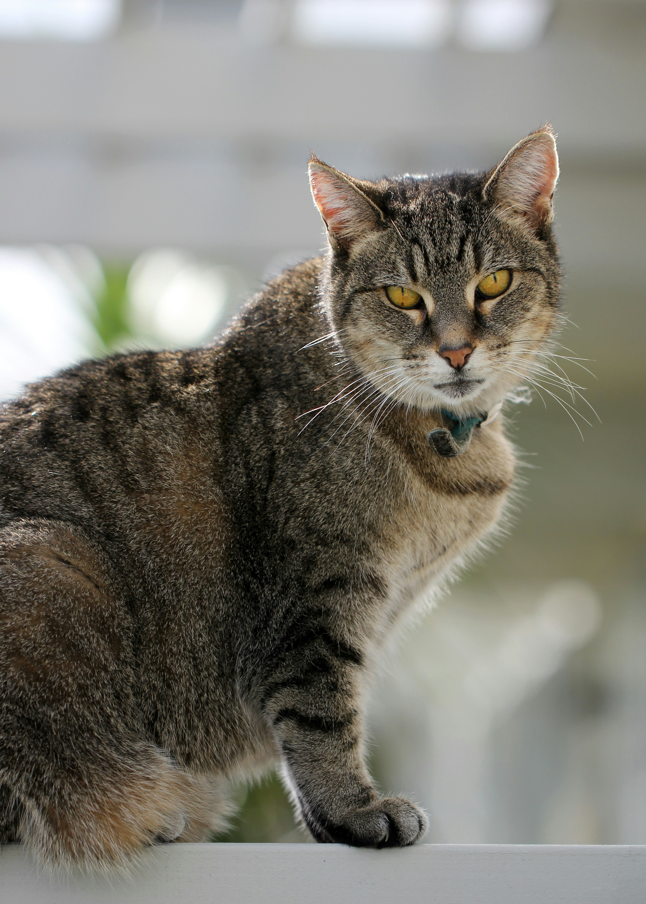
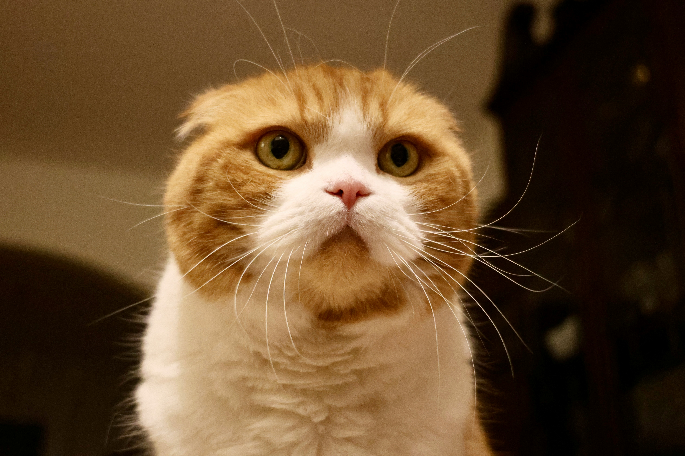

Chào mừng đến với thế giới mèo!
Đây là dự án tìm hiểu về Web Server và cấu trúc HTML thực tế. Trang web cung cấp kiến thức toàn tập về cách nuôi dưỡng và đặc điểm của các giống mèo phổ biến nhất.

🐾 Khám phá 10 giống mèo cực phẩm

1. Mèo Ta
Thông minh, khỏe mạnh và cực kỳ dễ thích nghi.

2. Anh Lông Ngắn
Gương mặt tròn trĩnh, tính tình hiền lành, điềm tĩnh.

3. Mèo Ba Tư
Vẻ đẹp quý tộc với bộ lông dài xù đặc trưng.

4. Mèo Xiêm
Giống mèo cổ xưa với đôi mắt xanh cuốn hút.

5. Mèo Ragdoll
Rất quấn chủ và có thân hình to lớn, mềm mại.

6. Maine Coon
Được mệnh danh là "người khổng lồ dịu dàng".

7. Mèo Sphynx
Độc lạ với cơ thể không lông, rất thông minh.

8. Mèo Bengal
Sở hữu bộ lông vằn báo đầy hoang dã.

9. Mèo Mướp
Người bạn thân thiết trong mọi gia đình Việt.

10. Mèo Tai Cụp
Vẻ ngoài đáng yêu với đôi tai cụp đặc trưng.
🧼 Bí quyết chăm sóc "Hoàng Thượng"
Để mèo luôn khỏe mạnh, bạn cần chú ý các điều sau:
- Dinh dưỡng: Cung cấp đủ đạm và nước sạch mỗi ngày.
- Vệ sinh: Dọn khay cát ít nhất 1 lần/ngày để tránh vi khuẩn.
- Sức khỏe: Tiêm phòng định kỳ theo hướng dẫn của thú y.